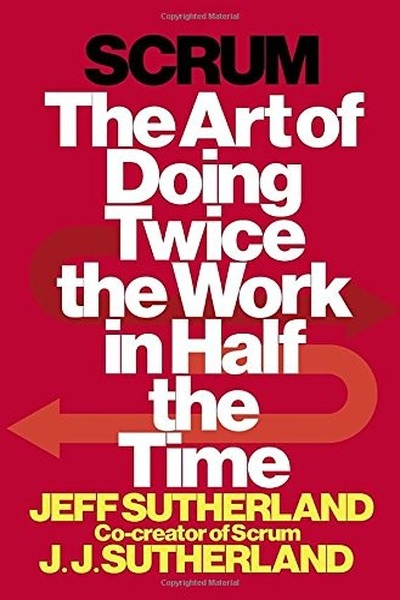

Library › Productivity
Scrum: The Art of Doing Twice the Work in Half the Time — Summary & Key Lessons

The agile framework that transformed software — and why it works for any team, anywhere.
📖 OPEN THE FULL INTERACTIVE BREAKDOWN →🌐 Read it in Hindi, Hinglish, Gujarati, Tamil & 22 more languages — free, with audio.
💡 The Big Idea
Sutherland, co-creator of Scrum, explains why big-batch, plan-everything projects fail: humans are terrible at predicting complex work, and by the time you finish a year-long plan, the world has moved. Scrum replaces the mega-plan with a loop: a small cross-functional team, a prioritized backlog, two-week sprints, and a review that adjusts the next sprint. Complexity is managed by feedback, not by prediction.
🧠 The 6 Key Lessons
Lesson 1: Big-Batch Planning Is a Lie
Chapter 1: The Way the World Works Is Broken
Sutherland opens with the failure of mega-projects — cars, software, buildings — that ran years late and billions over budget because they were planned up front and executed blindly. The world is too complex and too changing for a fixed plan to survive contact with reality. The alternative is not no planning but small-batch planning with constant correction.
📖 Example: The FBI's Virtual Case File system burned hundreds of millions over years of 'waterfall' development and was eventually scrapped — while teams using iterative delivery shipped usable value in months. The plan wasn't wrong in the beginning; it was wrong in… Read the full example →
⚡ Do this: Break your next project into two-week chunks with a review at the end of each — and let each review change the plan.
Lesson 2: The Backlog Is the Brain of the Project
Chapter 2: The Backlog
Scrum's engine is the prioritized backlog: every feature, fix and idea listed, ranked by value, visible to everyone. The product owner owns the priorities; the team owns the estimates. The backlog converts vague ambition into a living, adjustable list — and because it's visible, misalignment gets caught in days, not months.
📖 Example: Teams that keep a visible, ranked backlog stop having 'important' surprise requests derail the plan — each new request is either added to the backlog or competes with existing priorities. The list, not the loudest voice, decides what gets built next. Read the full example →
⚡ Do this: Write your project's full backlog today: every task, ranked by value, visible to the whole team — and update it weekly.
Lesson 3: Sprints Make Time Your Ally
Chapter 3: Sprints
A sprint is a fixed two-week (or shorter) box in which the team commits to a small set of goals and delivers something potentially usable. The time box creates urgency, focus and a natural review point. Short sprints make failure cheap: you discover what doesn't work in two weeks, not two years.
📖 Example: Software teams that moved from 6-month releases to 2-week sprints found bugs earlier, changed direction faster and shipped more total value — the shorter cycle didn't add pressure, it added information. Every sprint end is a chance to steer. Read the full example →
⚡ Do this: Run your next work period as a fixed 2-week sprint: choose 2-3 goals, work them exclusively, review honestly at the end.
Lesson 4: Self-Organizing Teams Beat Command-and-Control
Chapter 4: The Team
Sutherland's evidence: teams that plan their own work, estimate their own tasks and solve their own problems outperform teams managed top-down — because ownership activates judgment and motivation that obedience never does. The manager's job shifts from directing to removing obstacles. People do their best work when they own the plan.
📖 Example: In the original Scrum teams at Easel Corporation and later at major firms, the same engineers performed dramatically better when allowed to self-organize around sprint goals — velocity rose and defects fell without anyone working harder. The change was in… Read the full example →
⚡ Do this: Delegate one piece of work fully — goal and constraints, no method — and let the person own the how, reviewing only the outcome.
Lesson 5: The Daily Standup Catches Problems While They're Small
Chapter 5: Daily Scrum
The daily 15-minute standup — what did you do, what will you do, what's blocking you — is Scrum's early-warning system. Problems that would fester for weeks surface within a day, and the team coordinates without meetings multiplying. The standup is not a status report to a boss; it is a coordination pulse among equals.
📖 Example: Teams that run honest daily standups catch dependencies and blockers within hours of them arising, instead of discovering at delivery time that two people built conflicting pieces. The 15 minutes daily saves days monthly. Read the full example →
⚡ Do this: Start a daily 15-minute team sync this week: three questions, standing, no laptops — and keep it strictly short.
Lesson 6: Review, Retrospective, Repeat — the Improvement Loop
Chapter 6: The Retrospective
Scrum's final discipline is the retrospective: after each sprint, the team asks what went well, what went wrong and what to change — then actually changes one thing. Teams that retrospect honestly improve every cycle; teams that skip it repeat their mistakes at higher speed. Reflection is not a luxury; it is the compounding mechanism of team performance.
📖 Example: Sutherland recounts teams whose velocity and quality rose sprint after sprint purely from acting on retrospective findings — one small process fix per cycle. The teams that skipped retros plateaued; the ones that used them compounded. Read the full example →
⚡ Do this: After your next sprint or project, run a 30-minute retrospective with three questions and implement one change immediately.
✅ 5-Step Action Plan
- Break your project into two-week chunks with mandatory reviews
- Create a visible, ranked backlog and update it weekly
- Run one fixed 2-week sprint with 2-3 exclusive goals
- Delegate one piece of work fully, owning only the outcome
- Start a daily 15-minute team sync
⚠️ When This Doesn't Work
⚠️ When this doesn't work: Scrum assumes empowered, cross-functional teams and a culture that tolerates honest failure — in rigid hierarchies or solo work, the ceremonies can become bureaucratic theater (meetings about meetings) that adds overhead without adding adaptation. Use the principles (small batches, feedback, ownership) and skip the ritual when it stops serving the work.
💀 The Graveyard Proves It
🕳️ Trench Warfare — Where Strategy Died in the Mud — Millions of Men for Meters of Ground. Burn: ~10 million military deaths; entire nations scarred for a century. Read the full case study →
💬 Best Quotes from Scrum: The Art of Doing Twice the Work in Half the Time
- “Inspect and adapt.”
- “The team is the unit of delivery — not the individual.”
- “The best teams are small, cross-functional and empowered to figure it out themselves.”
Interactive version: mark lessons as read, listen in your language, share quote cards.